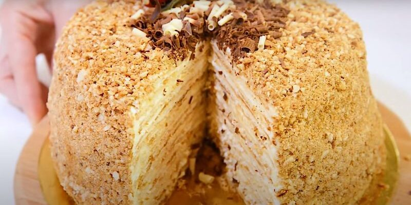

Навіть духовка не буде потрібна. Торт із 3-х інгредієнтів: гості думали, що Наполеон
Для приготування вам потрібні такі інгредієнти:
- Сметана: 200г
- Цукор: 200г
- Борошно: 200г
- Розпушувач: 200г
Для приготування крему необхідно:
- Сметана: 600г
- Цукрова пудра: 200г
Процес приготування торта
Сметану для коржів можна брати будь-якої жирності, а ось для крему, має бути жирною і густою, тоді менше часу витратите на збивання з цукровою пудрою.
Сметану змішуємо із цукром, ваніліном до смак
Всипаємо борошно з розпушувачем частинами і добре вимішуємо масу до гладкої однорідності.
Скачуємо ковбаску та ділимо її на 10 частин.
Кожну частину розгортаємо в корж на столі, присипаному борошном.
Щоб коржі виходили ідеально рівними, вирізайте їх круглою формою.
Обсмажуємо на сухій сковороді із двох сторін до рум’яності.
Для крему просто трохи збиваємо віночком сметану з цукровою пудрою та приступаємо до формування торта.
Змащуємо всі коржі кремом і складаємо рівною чаркою. Пару коржів залиште і подрібніть у крихту – це обсипання для торта.
Обмазуємо верх і боки кремом, обсипаємо крихтою і відправляємо настоюватися в холодильник на кілька годин, а краще на ніч.
Торт виходить просто ідеальним, як класичний Наполеон. Якщо ви робите тортик до свята, прикрасьте його на свій смак.